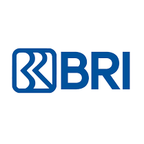

2026 - CURRENT
AUTOMATION
PT Bank Rakyat Indonesia
QA Automation Engineer
- Designed and maintained test automation frameworks using Katalon Studio with BDD.
- Automated regression testing for Web UI, API, and gRPC services.
- Performed performance and stress testing for gRPC services using ghz.
- Managed automation source code using Git in an Agile/Scrum environment.